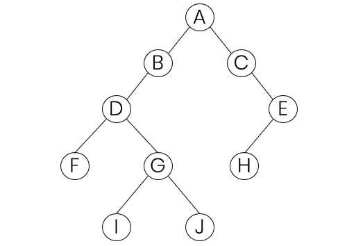

#include <stdio.h>
#include <stdlib.h>
typedef struct Node
{
char data;
struct Node *leftChild;
struct Node *rightChild;
} Tree;
Tree *createNode(char data)
{
Tree *node = (Tree *)malloc(sizeof(Tree));
node->data = data;
node->leftChild = NULL;
node->rightChild = NULL;
return node;
}
void insertNode(Tree *tree, Tree *l, Tree *r)
{
tree->leftChild = l;
tree->rightChild = r;
}
void preOrder(Tree *tree)
{
if (tree)
{
printf("%c", tree->data);
preOrder(tree->leftChild);
preOrder(tree->rightChild);
}
}
void inOrder(Tree *tree)
{
if (tree)
{
inOrder(tree->leftChild);
printf("%c", tree->data);
inOrder(tree->rightChild);
}
}
void postOrder(Tree *tree)
{
if (tree)
{
postOrder(tree->leftChild);
postOrder(tree->rightChild);
printf("%c", tree->data);
}
}
int main(void)
{
Tree *A = createNode('A');
Tree *B = createNode('B');
Tree *C = createNode('C');
Tree *D = createNode('D');
Tree *E = createNode('E');
Tree *F = createNode('F');
Tree *G = createNode('G');
Tree *H = createNode('H');
Tree *I = createNode('I');
Tree *J = createNode('J');
insertNode(A, B, C);
insertNode(B, D, NULL);
insertNode(C, NULL, E);
insertNode(D, F, G);
insertNode(E, H, NULL);
insertNode(G, I, J);
preOrder(A);
printf("\n");
inOrder(A);
printf("\n");
postOrder(A);
printf("\n");
return 0;
}